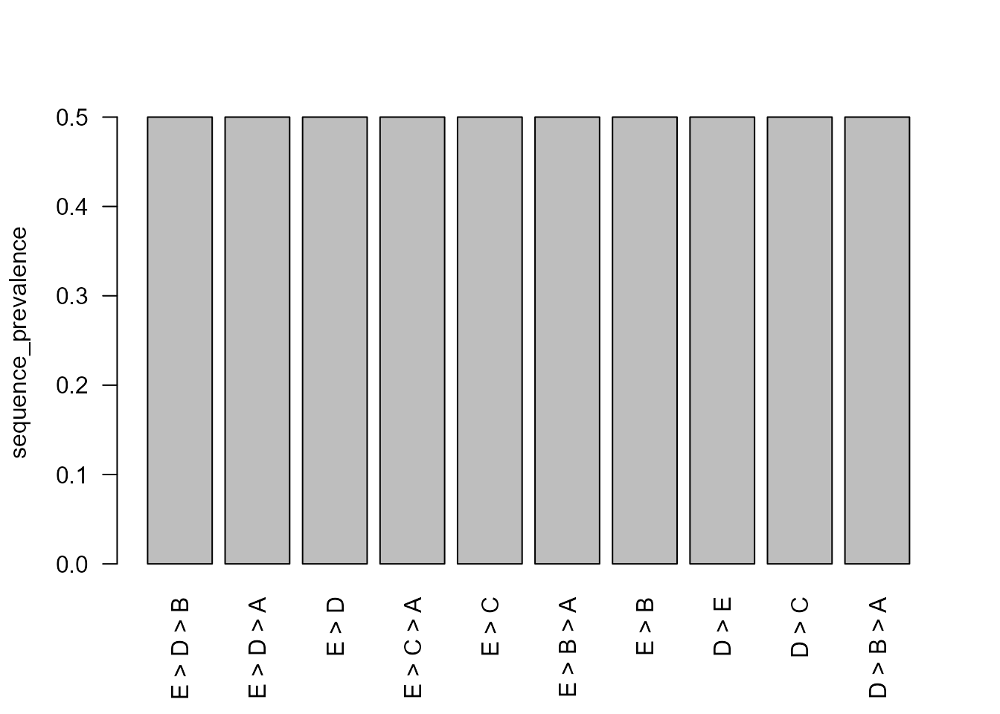

Bounded Non-Contiguous Subsequence Mining
Source:vignettes/noncontiguous-subsequence-mining.Rmd
noncontiguous-subsequence-mining.RmdWhy bounded subsequences?
A non-contiguous subsequence preserves order while allowing intervening states. The implementation requires explicit motif length, maximum gap, maximum span, and combination limits. These constraints keep enumeration auditable and avoid silently searching an unbounded combinatorial space.
Synthetic sequences
sequences <- data.frame(
sequence_id = rep(paste0("s", 1:6), each = 5L),
sequence_order = rep(1:5, times = 6L),
state = c(
"A", "B", "C", "D", "E",
"A", "C", "B", "D", "E",
"A", "B", "D", "C", "E",
"E", "D", "C", "B", "A",
"E", "C", "D", "B", "A",
"E", "D", "B", "C", "A"
),
group = rep(rep(c("forward", "reverse"), each = 3L), each = 5L),
stringsAsFactors = FALSE
)Enumerate occurrences
occurrences <- extract_sequence_subsequences(
sequences,
metadata_cols = "group",
min_length = 2L,
max_length = 3L,
max_gap = 2L,
max_span = 4L,
repeated_state_policy = "preserve"
)
head(occurrences)
#> sequence_id subsequence subsequence_length start_order end_order span
#> 1 s1 A > B 2 1 2 1
#> 2 s2 A > B 2 1 3 2
#> 3 s3 A > B 2 1 2 1
#> 4 s1 A > C 2 1 3 2
#> 5 s2 A > C 2 1 2 1
#> 6 s3 A > C 2 1 4 3
#> max_observed_gap selected_positions selected_orders
#> 1 0 1,2 1,2
#> 2 1 1,3 1,3
#> 3 0 1,2 1,2
#> 4 1 1,3 1,3
#> 5 0 1,2 1,2
#> 6 2 1,4 1,4
attributes(occurrences)[c("n_sequences", "settings")]
#> $n_sequences
#> [1] 6
#>
#> $settings
#> $settings$min_length
#> [1] 2
#>
#> $settings$max_length
#> [1] 3
#>
#> $settings$max_gap
#> [1] 2
#>
#> $settings$max_span
#> [1] 4
#>
#> $settings$repeated_state_policy
#> [1] "preserve"
#>
#> $settings$separator
#> [1] " > "
#>
#> $settings$max_combinations_per_sequence
#> [1] 100000Sequence-level prevalence
subsequence_summary <- summarise_sequence_subsequences(occurrences)
head(subsequence_summary, 10L)
#> subsequence subsequence_length occurrence_count sequence_count
#> 1 A > B 2 3 3
#> 2 A > C 2 3 3
#> 3 A > D 2 3 3
#> 4 B > A 2 3 3
#> 5 B > C 2 3 3
#> 6 B > D 2 3 3
#> 7 B > E 2 3 3
#> 8 C > A 2 3 3
#> 9 C > B 2 3 3
#> 10 C > D 2 3 3
#> sequence_prevalence mean_span median_span mean_max_gap
#> 1 0.5 1.333333 1 0.3333333
#> 2 0.5 2.000000 2 1.0000000
#> 3 0.5 2.666667 3 1.6666667
#> 4 0.5 1.333333 1 0.3333333
#> 5 0.5 1.333333 1 0.3333333
#> 6 0.5 1.333333 1 0.3333333
#> 7 0.5 2.666667 3 1.6666667
#> 8 0.5 2.000000 2 1.0000000
#> 9 0.5 1.333333 1 0.3333333
#> 10 0.5 1.333333 1 0.3333333
frequent <- filter_sequence_subsequences(
subsequence_summary,
min_sequences = 2L,
min_prevalence = 0.25,
top_n = 12L
)
frequent
#> subsequence subsequence_length occurrence_count sequence_count
#> 1 A > B 2 3 3
#> 2 A > C 2 3 3
#> 3 A > D 2 3 3
#> 4 B > A 2 3 3
#> 5 B > C 2 3 3
#> 6 B > D 2 3 3
#> 7 B > E 2 3 3
#> 8 C > A 2 3 3
#> 9 C > B 2 3 3
#> 10 C > D 2 3 3
#> 11 C > E 2 3 3
#> 12 D > A 2 3 3
#> 13 D > B 2 3 3
#> 14 D > C 2 3 3
#> 15 D > E 2 3 3
#> 16 E > B 2 3 3
#> 17 E > C 2 3 3
#> 18 E > D 2 3 3
#> 19 A > B > D 3 3 3
#> 20 A > B > E 3 3 3
#> 21 A > C > E 3 3 3
#> 22 A > D > E 3 3 3
#> 23 B > D > E 3 3 3
#> 24 D > B > A 3 3 3
#> 25 E > B > A 3 3 3
#> 26 E > C > A 3 3 3
#> 27 E > D > A 3 3 3
#> 28 E > D > B 3 3 3
#> sequence_prevalence mean_span median_span mean_max_gap
#> 1 0.5 1.333333 1 0.3333333
#> 2 0.5 2.000000 2 1.0000000
#> 3 0.5 2.666667 3 1.6666667
#> 4 0.5 1.333333 1 0.3333333
#> 5 0.5 1.333333 1 0.3333333
#> 6 0.5 1.333333 1 0.3333333
#> 7 0.5 2.666667 3 1.6666667
#> 8 0.5 2.000000 2 1.0000000
#> 9 0.5 1.333333 1 0.3333333
#> 10 0.5 1.333333 1 0.3333333
#> 11 0.5 2.000000 2 1.0000000
#> 12 0.5 2.666667 3 1.6666667
#> 13 0.5 1.333333 1 0.3333333
#> 14 0.5 1.333333 1 0.3333333
#> 15 0.5 1.333333 1 0.3333333
#> 16 0.5 2.666667 3 1.6666667
#> 17 0.5 2.000000 2 1.0000000
#> 18 0.5 1.333333 1 0.3333333
#> 19 0.5 2.666667 3 0.6666667
#> 20 0.5 4.000000 4 1.6666667
#> 21 0.5 4.000000 4 1.6666667
#> 22 0.5 4.000000 4 1.6666667
#> 23 0.5 2.666667 3 0.6666667
#> 24 0.5 2.666667 3 0.6666667
#> 25 0.5 4.000000 4 1.6666667
#> 26 0.5 4.000000 4 1.6666667
#> 27 0.5 4.000000 4 1.6666667
#> 28 0.5 2.666667 3 0.6666667Group comparison
comparison <- compare_sequence_subsequences(
occurrences,
group_col = "group",
p_adjust = "holm"
)
head(comparison, 10L)
#> subsequence subsequence_length test statistic df p_value max_prevalence
#> 1 A > B 2 fisher NA NA 0.1 1
#> 2 A > B > D 3 fisher NA NA 0.1 1
#> 3 A > B > E 3 fisher NA NA 0.1 1
#> 4 A > C 2 fisher NA NA 0.1 1
#> 5 A > C > E 3 fisher NA NA 0.1 1
#> 6 A > D 2 fisher NA NA 0.1 1
#> 7 A > D > E 3 fisher NA NA 0.1 1
#> 8 B > A 2 fisher NA NA 0.1 1
#> 9 B > D 2 fisher NA NA 0.1 1
#> 10 B > D > E 3 fisher NA NA 0.1 1
#> min_prevalence prevalence_range prevalence_forward n_forward
#> 1 0 1 1 3
#> 2 0 1 1 3
#> 3 0 1 1 3
#> 4 0 1 1 3
#> 5 0 1 1 3
#> 6 0 1 1 3
#> 7 0 1 1 3
#> 8 0 1 0 3
#> 9 0 1 1 3
#> 10 0 1 1 3
#> prevalence_reverse n_reverse prevalence_difference p_adjusted
#> 1 0 3 -1 1
#> 2 0 3 -1 1
#> 3 0 3 -1 1
#> 4 0 3 -1 1
#> 5 0 3 -1 1
#> 6 0 3 -1 1
#> 7 0 3 -1 1
#> 8 1 3 1 1
#> 9 0 3 -1 1
#> 10 0 3 -1 1The comparison is based on sequence-level presence, not occurrence multiplicity. Adjusted p-values do not turn an observational grouping into a causal design.
plot_sequence_subsequences(frequent, metric = "sequence_prevalence")